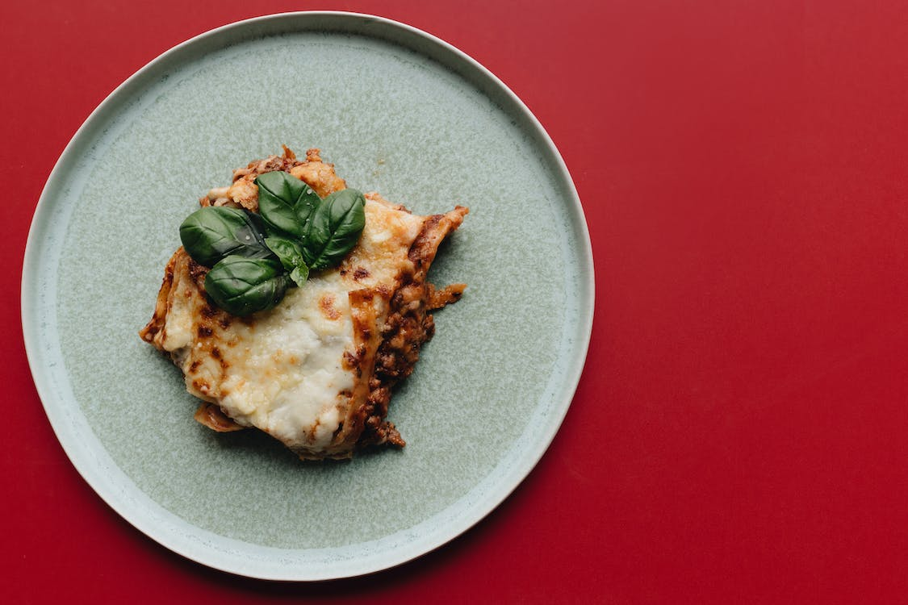

Lasagna

Description
Lasagna is a classic Italian dish known for its layers of rich flavors and textures. To prepare a delicious lasagna, you will need lasagna noodles, ground beef or Italian sausage, garlic, onions, tomato sauce, ricotta cheese, Parmesan cheese, fresh parsley, and mozzarella cheese.
Ingredients
- 12 lasagna noodles
- 1 pound (450g) ground beef or Italian sausage
- 3 cloves of garlic, minced
- 1 medium onion, diced
- 24 ounces (680g) of tomato sauce
- 15 ounces (425g) of ricotta cheese
- 1 cup (100g) grated Parmesan cheese
- 2 tablespoons of freshly chopped parsley
- 2 cups (200g) shredded mozzarella cheese
Steps
- Cook the lasagna noodles according to the package instructions until al dente.
- In a separate pan, sauté minced garlic and diced onions until golden brown.
- Add ground beef or Italian sausage to the pan and cook until browned. Drain excess fat.
- Add tomato sauce to the meat mixture and stir well to combine.
- In a bowl, combine ricotta cheese, grated Parmesan cheese, and chopped parsley.
- Grease a baking dish and layer the ingredients: meat sauce, noodles, ricotta mixture, and mozzarella cheese.
- Repeat the layers until all ingredients are used, finishing with a layer of meat sauce and mozzarella cheese on top.
- Cover the dish with foil and bake in a preheated oven at 375°F (190°C) for 25 minutes.
- Remove the foil and bake for an additional 10-15 minutes until the cheese is bubbly and golden brown.
- Allow the lasagna to cool for a few minutes before serving.